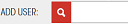

help home » add department users »
How To Add Department Users
Note: Only System Admin and Department Admin have permissions to add department users.
- Click on the "Departments" button on the left side menu bar
- On "Departments" page, you should see a table of all current departments in system
- Find the department you want to add users using the "Filter entries" function by inputing relevant department code or name on the "Filter entries" box, or you could click on any sortable table column header to make your search easier.
- Press the users icon on the row you want to add users, this would bring you to the "Department Users" page which contains all department users in current department.
- Type in valid Seneca employee full username into the "Search User" input box. 
- Press "Enter" key or click the search icon to add user to department
- A "Success", "User Not Found", or "User already in database" information would show on top of the page, if success, you should be be able to find the user on the table.